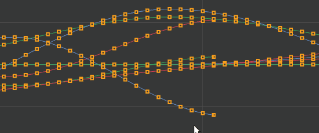
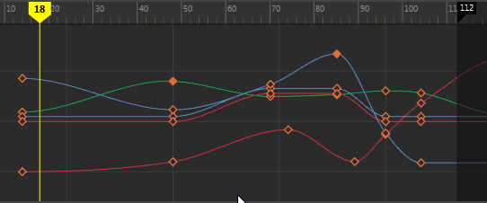

这些选项控制动画曲线的哪些组件可用于选择和编辑。
注： 在“曲线图编辑器”(Graph Editor)的图表视图中选择动画曲线的组件时，与当前选择的组件属性相对应的“大纲视图”(Outliner)中将出现一个框。
- 全部(All)
-
支持选择动画曲线的任何组件。
- 仅曲线(Only Curve)
-
将选择约束为仅限动画曲线分段。
- 曲线(Curve)
-
将选择约束为动画曲线分段。若要选择一条曲线，请单击（或拖动选择）两个关键帧之间的曲线以选中它，然后再次单击以移动。注： 默认情况下，已启用曲线选择。
- 关键帧(Key)
-
将选择约束为关键帧。
- 入切线(In Tangent)
-
将选择约束为关键帧的入切线。入切线是指描述输入关键帧的曲线分段形状的切线。
- 出切线(Out Tangent)
-
将选择约束为关键帧的出切线。出切线是指描述离开关键帧的曲线分段形状的切线。注： 若要在“关键帧”(Key)和“曲线”(Curve)选择禁用时选择切线，则必须选择“视图 > 切线 > 始终”(View > Tangents > Always)。
- 选择前亮显(Pre-Select Highlight)
-
为图表视图中的曲线、分段、切线和关键帧启用“预先选择亮显”，可以为您提供有关选择内容的视觉反馈。请参见在“曲线图编辑器”(Graph Editor)中启用选择前亮显。
- 首选选定曲线(Prefer Selected Curves)
- 激活此选项可限制为仅对正在处理的曲线选择关键帧或切线。当此设置处于活动状态时，如果拖动选择一组曲线，将仅选择处于选中状态的曲线上的关键帧。这有助于防止在处理密集动画数据时意外选择其他关键帧。
- 该设置默认处于禁用状态。

使用“首选选定曲线”(Prefer Selected Curves)可以聚焦在选定的曲线上
- 将时间捕捉到当前选择(Snap Time to Selection)
-
启用此选项后，当前时间标记将捕捉到您选择的任何关键帧。热键：Alt + /（正斜线）
“将时间捕捉到当前选择”(Snap Time to Selection)处于禁用与启用状态之间的行为比较
默认情况下，此设置处于禁用状态。